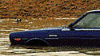
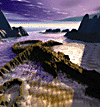

Interesting Ideas
http://www.mcs.com/ ~billsw/home.html
There's no shortage of strange pop culture on the Web, but rarely have we seen a site treating our society's cultural oddities with as unique and insightful an angle as Interesting Ideas. From a brilliantly entertaining analysis of Leave It to Beaver to a bizarre collection of roadside art, Bill Swislow's triumphant dissection of pop culture takes our top spot for proving that ideas can reign supreme on the Web.
Ftp:wiretap.spies
ftp://wiretap.spies.com
It's not a question of what you can find at this FTPsite, but what can't you find if you look long enough. From alien abductions, UFOfiles and drug recipes to bizarre statistics and tips on how to spy on your friends, this huge site offers hours of bizarre, educational fun. Virtually anyone can post to it, so along with the useful are bizarre stories, disgusting poetry and odd essays on an incredible variety of subjects, from cult films to religions you don't recognize.
The Deoxyribonucleic Hyperdimension
http://www.intac.com/ ~dimitri/dh/deoxy.html
We have yet to hit a link on this exhaustive site that wasn't interesting. It impressively combines education with entertainment on stuff "they" might not want you to know, in a mix of science, sociology, subversive culture, LSD, physics, psychics and even the history of thought crimes, starting with that troublesome Galileo. All of long with long discourses on shamanism, various philosophies and a bit of sound from the 1,00-arm audio Buddha. We must say, the creator also includes some of the most interesting links lists we've found on the Web.
Highway 17 Page of Shame
http://www.got.net/ ~egallant/the_road.html
 Drivers on California's Hwy. 17 beware -- you are being watched. Disgruntled motorist Emil Gallant with the aid of an Apple QuickTake camera has begun to post shots of the moronic motorists he observes on his daily commute. The hope is that the "Jerque du Jour" will be shamed into correcting their evil ways. Beyond that noble goal, Gallant's rants are hilarious, as is his Repeat Offenders area where he takes on BMW owners and their "Ultimate Rudeness Machines."
The Blue Highway
http://www.vivanet.com/ ~blues/tbh.html
"The history of the blues is more than a musical chronology. The blues was born the day the West African shoreline fell from the horizon," writes Curtis Hewston, the author of this remarkable site. The Blue Highway includes not only biographies and information about the men and women credited with crafting the blues music genre, but also comprehensive listings of blues radio shows, news and links. You can take a trip down the Blue Highway (U.S. 61) by looking at the 60 photos that capture the landscape and people from New Orleans to Chicago, via the Mississippi Delta.
Center for the Easily Amused
http://www2.islandnet.com/~cwalker/
Normally, we would never put a site that's essentially just a bunch of links into our Top 10. However, this collection, put together by Cathie Walker and Brian Leslie, contains links to some of the more interesting, odd and talked-about sites, from the classic Confession Booth to Games on the Internet. Most of the stuff is just a time waste, but at least it's quality time wasting.
FilmZone
http://www.filmzone.com/
From the people who brought you the Crash Site comes this stunning melange that aspires "to blend the timeless art of cinema with the experience of interactivity." What that means exactly is a mess of film news, downloadable clips, exclusive interviews and more, culled from mainstream, independent and foreign films. FilmZone eschews the puff to go behind the scenes searching for those who treat movies like an art form rather than a business, and has fun doing it.
On Hoops
http://www.onhoops.com/
If you like your NBA news dished out with a dose of attitude, check out On Hoops. Maintained by Los Chucks, a pair of roundball junkies, On Hoops checks in with honest game analysis and general critiques of trends and players. Site highlights are the police blotter, detailing the inequities of NBA bad boys, and the chump roster where you can nominate your favorite journeyman a la Jim Les. (For more about On Hoops, link to our article in this issue.)
SonicNet
http://www.sonicnet.com/
Hit the jukebox for music to browse by before you browse this kinetic 'zine designed with a fresh approach to Web graphics and an interesting mix of content put together by writers from all over. Brought to you by GNN, the site features up-to-date club and concert listings for major cities, reviews of new music and essays on subjects of interest to Generation Xers.
New Power Network
http://130.161.36.8:80/npn/
 Love him or hate him, the artist formerly known as Prince is nothing if not prolific. Check out this site and you'll quickly discover that his fans are as well: The New Power Network, based in the Netherlands, is closer to a subculture than a fan page. You really have to see this page to believe it: artwork and writing contributed by fans (most of it not bad), a comprehensive list of every song his Funkiness ever played anywhere (and you have to remember, this is a guy with a bank of 500 unreleased tunes), links to clubs and individual fans anywhere in the world, innumerable discussions and reviews, a comprehensive list of tour dates and aftershows, guitar and bass tablatures, and just about every other toy you can imagine.